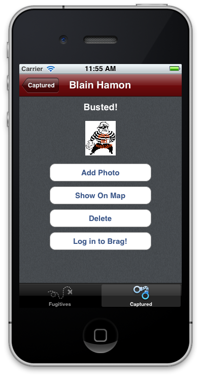
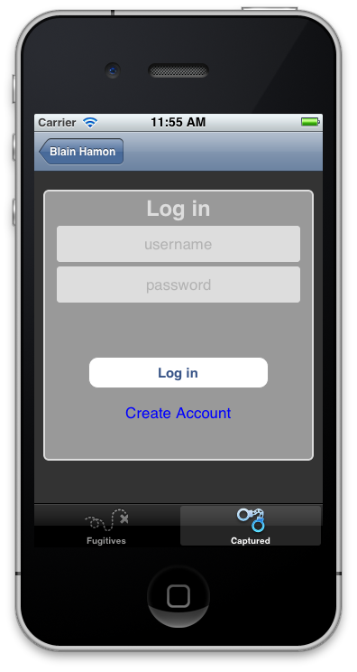

Lab - Integrating ACS
Mission: In this lab, you will integrate Appcelerator Cloud Services into the TiBountyHunter application to enable users to boast about their captured bounties. You will use the ACS Status API to enable users to post messages that are saved in the ACS cloud. While we won't be building it in this lab, presumably there would be a Web page where user would see those boasts or perhaps the app would feature a way to see other users' boasts. Creating those features is an 'exercise left to the reader.'
| 1. Download the starting file set from GitHub or AWS/S3. You have to create a new cloud-enabled project, and copy the Resources folder from this download to that project. ACS requires unique GUIDs, so you can't simply import the downloaded project. | |
| 2. Build the project for either the iPhone simulator or Android emulator. Capture a bounty and then click the Captured tab. Tap the captured fugitive's name. Tap Log in to Brag.  |
|
| We've written most of the UI features and changes so that you can concentrate on adding the ACS functionality. Of course, at this point, those fields and buttons don't do anything. | |
| 3. Open the ui/common/DetailWindow.js and examine the ACS-related code that starts around line 176. | |
| This code creates the buttons and windows of the UI, and responds to events. The ACS functions are in a separate file. | |
| 4. Open lib/acs.js and examine its contents. | |
| This file contains function skeletons that you will write to enable ACS. | |
| 5. Following the comments included in the acs.js file, write each of the functions required to enable the ACS functions of the app. | |
| 6. Open the tiapp.xml file and click Enable Cloud Services. Switch to the XML view and examine the tags added to the file. | |
| Clicking this button registered the app with the cloud.appcelerator.com site, generates the necessary keys, and added the required tags to your tiapp.xml file. | |
| 7. Save your changes in all files and build your project for the simulator/emulator. | |
| 8. Test your app by capturing a fugitive and on his or her details page, click Log in to Brag. Click Create Account and complete the username, password, and confirm boxes. Tap Return or a blank area of the window to hide the keyboard. Click Create Account. | |
| Correct any errors and repeat the test until you can successfully post a message and retrieve the list of boasts. | |
| 9. Close the simulator/emulator and all open files in Studio. | |
Summary
In this lab, you implemented a couple of the ACS APIs. There are many more for you to explore. Obviously, we didn't complete a feature-complete app. There's no way to share messages or see those posted by others. But this lab's steps give you a taste of what can be done with ACS. And most notably, it highlights how you can add server-side functionality to your app without doing any server-side coding.
Resources
- Finished code: GitHub or AWS/S3
- API Docs: Cloud
- Cloud QuickStart Guide